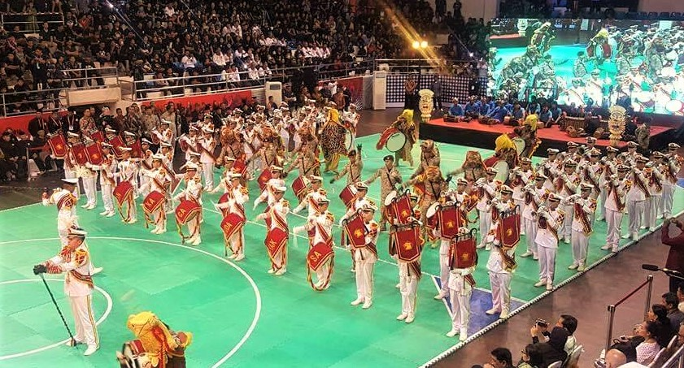
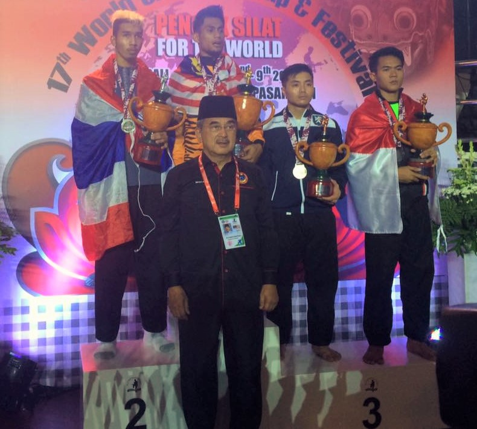
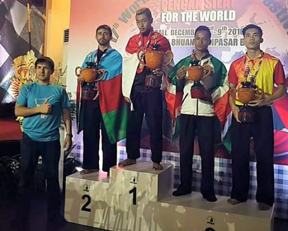
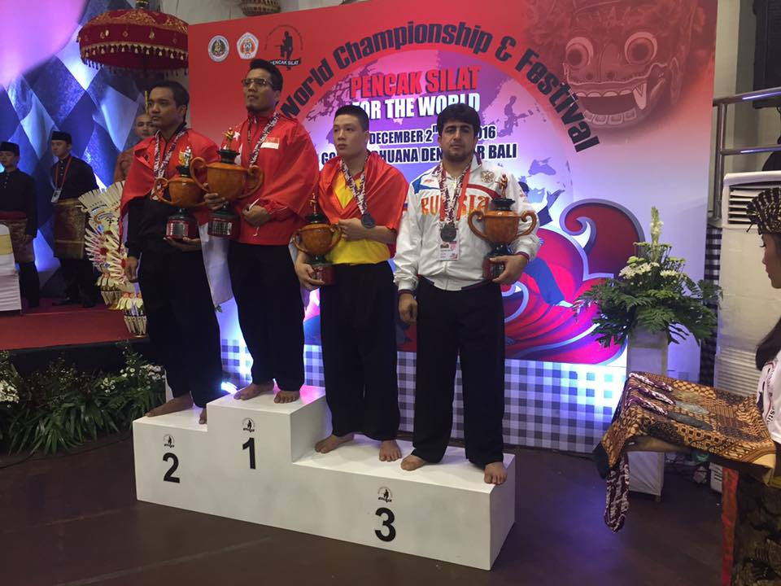
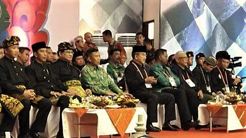
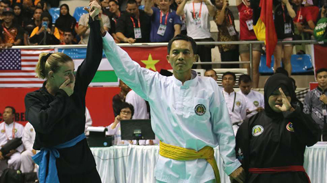
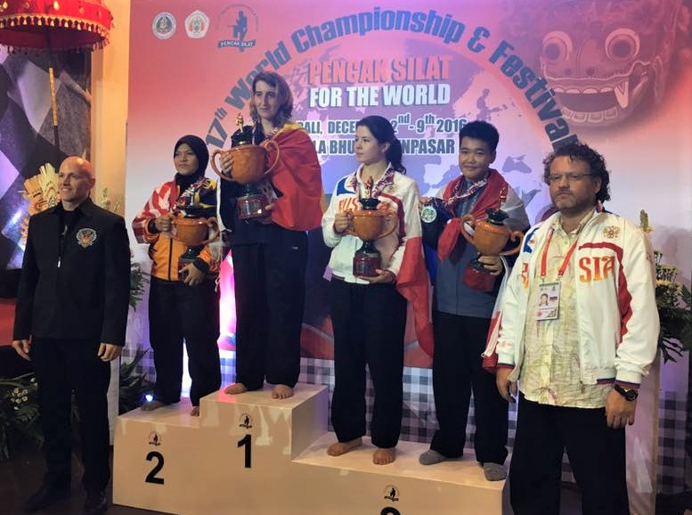

17th World Pencak Silat Championships

Thirteen European nations entered the 17th World Pencak Silat Championships in December 2016, pitching 48 of their finest fighters & artistic performers against competitors from across the World. Competing in 17 different Sports & Artistic categories, the results were the best ever for Europe, with a total of 1 Gold, 2 Silver & 5 Bronze medals.
From among the EPSF Member countries at the Championships: Azerbaijan, Belgium, Estonia, France, Germany, Netherlands, Russia, Slovakia, Spain, Switzerland, Turkey, Ukraine, & the United Kingdom, the greatest number of medals was won by The Netherlands, followed by Azerbaijan & the UK, but it was Belgium that won the first Gold medal at a World Championships for a European pesilat since 1992, & Wendy Pieters who was the first European woman to win a Gold medal at a World Championships.
A further achievement for EPSF members was that the best male fighter & best female fighter cups were awarded to the NPSF's Roland Goedhart & to the BPSB's Wendy Pieters.

The Championships began with a marvellous Opening Ceremony, attended by the President of PERSILAT, Mr Prabowo Subianto, Indonesia's Minister of Sports & Youth Affairs, Mr Imam Nahrawi & also the Deputy Governor of Bali, I Ketut Sudikerta, who officially opened the Championships. Other local dignitaries & the Presidents of the National Pencak Silat Federations taking part also attended.

The Netherland's Dang Nguyen, fighting in Male Tanding class E beat Jo Soongi of South Korea, going on to win against India in the 2nd round. Dang finally lost in the semi-finals to Thailand's Kuibrohem Kubaha, who went on to win Silver, but winning the first medal for Europe at these Championships.

In the first round in Male Open class, the UK's Samir Ghanim faced Loic Latyr Sar of Senegal. Samir beat his opponent 5 flags to 0. In the same class, the Netherland's Roland Goedhart fought Germany's Dennis Plessow, & Roland won. The following day, Roland faced Samir. The match was won by Roland, 4 flags to 1, so that Samir was the winner of a Bronze medal, while Roland went on to the Finals. Roland faced tough competition against the current World Champion, Vietnam's Hoang Van Bac, & lost the match, but winning the Silver medal.

Minouche Van der Hoeven of the Netherlands won her first match in Female class E against Thailand's Paweena Sriinsut, going on to face Malaysia's Siti Ramah Binti Muhamed. Minouche lost this match, but was a Bronze medal winner.
Azerbaijan's Eckhan Javarov won the first round against the UK's Racan Osman in Male Class C, going on to beat Brunei in the quarter finals, & Suriname in the Semi Finals the following day. Eckhan lost the final against Indonesia's Hanifan Yudani Kusumah, but was still one of the 2 European Silver medallists at these World Championships.

Having won against the UK's Arash Adami in the first round, Male class I, the Netherlands' Fernando Felix faced Russia's Meqami Bayramov in the 2nd round. Meqami won, 5 flags to 0, going on to the semi-final against Singapore's Muhummad Shakir Bin Juanda. Meqami lost this fight, although at 1 flag to 4, & was the winner of a Bronze medal.

In Female class F, Russia's Lyaysana Burnasheva faced Ummi Syazana Binti Husin of Malaysia, while Belgium’s Wendy Pieters was against Vietnam's Pham Thi Hai Nhu. Wendy won her match, but Lyaysana lost to Malaysia. In the next round, Wendy also beat Thailand's Benya Srikhampa, meaning she was through to the Finals, while Lyaysana was the winner of a Bronze medal.

Special mention must be made of France's Hamid Bourkiza & Coline Fontaine, who competed in both Tanding & Seni categories, - male class B & female class C, as well as Tunggal. Coline faced Indonesia in the first round, losing the match, while her opponent went on to win Gold. Hamid fought on the first day of competitions, losing to Algeria in the first round.
Finishing 4 seconds early, Coline's Tunggal performance scored 444 points, a great result, but which meant she wouldn't go into the finals. The day after his Tanding match, Hamid scored 443 points in Tunggal, which meant he went on to the Finals, - a fantastic achievement. The following day, Hamid finished at precisely 3 minutes, but his score of 424 points was outside the medal positions.
Spain's Xabier Pombo also competed in both Male class F, & in Male Tunggal, although he did not progress past the first round.
Germany's Nils Schwieman competed in Tanding male class D, & also in the Seni Festival with his brother Till. Till also competed in the male Tunggal competition, - he finished just one second outside of 3 minutes, but his score of 439 was not enough to go into the Finals. Their Ganda performance in the Seni Festival won them a prize for the Best Music Composition for male Ganda at the Festival.
The Best Unique male double performance in the Festival was also won by European pesilat - Turkey's Yilmaz Aydin & Mehmet Kapukaya, while the Best Unique Group Performance was won by Spain's Zoubair Ait Lhai, Xabier Rodilla, Saul Mayo Tena, Alfonso Sagarna & Xabier Aranburu.

The final competitions, & the Closing Ceremony were attended by His Excellency, Bapak Joko Widodo, President of the Republic of Indonesia.
The final between Belgium's Wendy Pieters & Malaysia's Ummi Syazana Binti Husin was one of the exhibition fights, in front of a huge audience, including the President of the Republic of Indonesia. Having already beaten Vietnam & Thailand, European hopes were pinned on Wendy. In a closely fought match, marked by good sportsmanship between Wendy & her opponent, the points seemed close. Wendy was overwhelmed when 3 flags were for her, against 2 for the Malaysian.


In his closing speech, Mr Prabowo Subianto declared that these Championships had been the largest yet, with 37 countries taking part, & emphasised that Pencak Silat should always be used with the positive intentions, & was a way to promote friendship & harmony between all peoples & religions.
Mr Subianto presented Bapak Joko Widodo with a Kris & certificate, honouring him as an Honorary Pendekar.

Before closing the Championships, His Excellency Bapak Joko Widodo spoke of the spread of the art of Pencak Silat throughout the world, & endorsed PERSILAT's strategy for Silat to be accepted as an Olympic sport.

Competing countries:
Algeria, Australia, Azerbaijan, Belgium, Brunei Darussalam, Egypt, Estonia, France, Germany, India, Indonesia, Iran, Japan, South Korea, Kyrgyzstan, Laos, Malaysia, the Netherlands, Nepal, Pakistan, the Philippines, Russia, Senegal, Singapore, Slovakia, South Africa, Spain, Suriname, Switzerland, Thailand, Timor Leste, Turkey, Ukraine, the United Kingdom, the USA, Uzbekistan and Vietnam.
Organisers & Hosts, 17th World Pencak Silat Championships:
Ikatan Pencak Silat Indonesia (IPSI)
Sanctioned by International Pencak Silat Federation (PERSILAT)